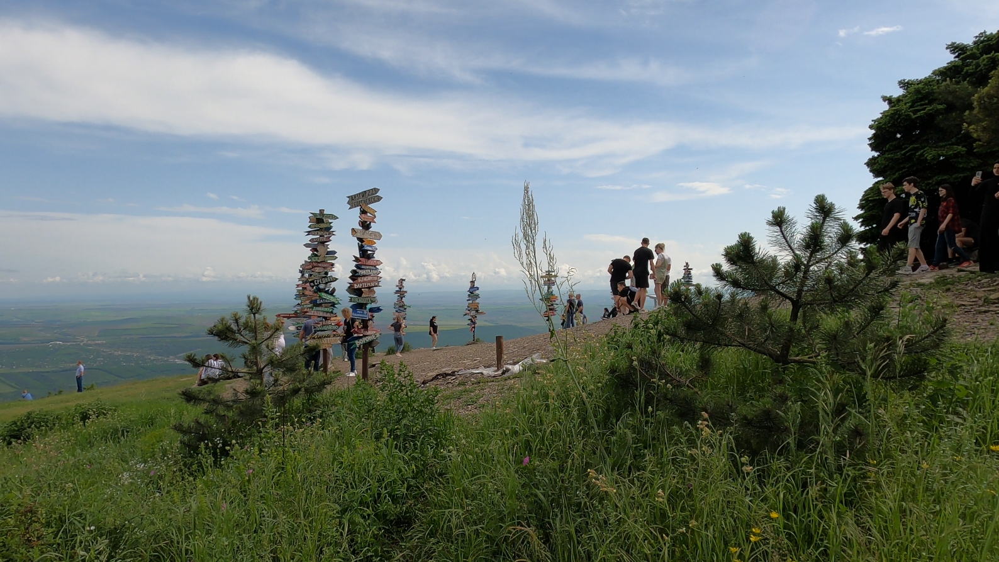
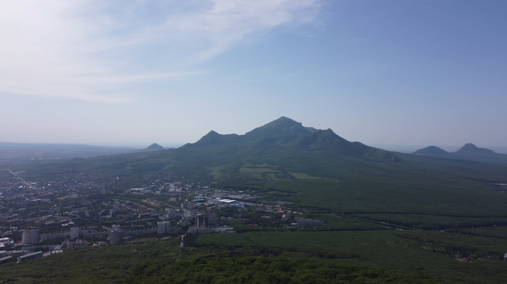

Топ 10 мест в Пятигорске
|16 сентября 2023
Пятигорск - самый популярный город-курорт на Кавказских Минеральных Водах. В него устремляется множество туристов со всей России. В статье обсудим 10 главных достопримечательностей города и окрестностей.
Содержание
Гора Машук
Парк "Цветник"
Экзотариум
Гора Бештау
Провал
Эолова арфа
Пятигорский некрополь
Домик Лермонтова
Национальный парк "Приэльбрусье"
Гора Кольцо
1. Гора Машук
Гора Машук — памятник природы и одно из визитных мест Пятигорска, она находится на северо-востоке города, ее высота над уровнем моря — 993 метра.
Наверх можно подняться пешком, по асфальтированной автомобильной дороге или по лесной тропе. Но этот маршрут довольно утомительный, и кому то он может не подойти. Второй, более комфортный путь — подняться на канатной дороге за 3 минуты, заплатив 220 рублей.
2. Парк "Цветник"

Парк цветник — любимое место отдыха горожан и гостей Пятигорска. Здесь высаживаются поля и клумбы с цветами. История парка насчитывает почти 200 лет. Сегодня в парке «Цветник» сосредоточены многие достопримечательности курортного города. Здесь можно увидеть здание Лермонтовской галереи, которая украшает парк больше века, и еще хорошо сохранилась.
В парке установлены современные фонари и памятник Кисе Воробьянинову, разбиты цветники и живописные ландшафтные композиции. Здесь проводятся многие городские мероприятия, выставки и концерты. Рядом с Лермонтовской галереей расположены Ермоловские ванны, вверх по склону горы находится грот Дианы, а еще выше – скульптура «Орел», которая является одним из символов Кавказских Минеральных Вод и Пятигорска.
3. Экзотариум
Экзотариум - очень атмосферное место недалеко от парка "Цветник". Здесь будет интересно и взрослым, и детям - можно подержать хамелеона, змею или птицееда а также посмотреть как кормят питона или варана.
В качестве сувенира можно приобрести чучело бабочки или даже живого паука.
4. Гора Бештау
Название горы Бештау переводится с тюркского языка как «пять гор». Именно Бештау дала имя городу Пятигорску и название всей окружающей местности, известной сегодня как Пятигорье. Бештау – самая высокая гора Кавказских Минеральных Вод, которая имеет высоту 1400 метров над уровнем моря. Бештау является природным памятником Ставрополья и считается лакколитом – несостоявшимся вулканом, лава которого не смогла прорваться. На западном склоне расположен Успенский Второ-Афонский Бештаугорский мужской монастырь. Настоящую популярность горе Бештау принесли источники минеральных целебных вод: Бештаугорский и Иноземцевский. На вершину горы ведут несколько пешеходных маршрутов и конная тропа. На подъем лучше закладывать весь день, так как он долгий и изнурительный, и может подойти не всем.
5. Провал
«Провал» – знаменитая пятигорская пещера природного происхождения с подземным озером, наполненное сернистой водой. Оно образовалось на склоне горы Машук из-за землетрясений и разрушения известковой породы парами сероводорода. До конца 19 века в пещеру спускались сверху в корзине, затем в горе прорубили 58-метровый тоннель для прохода. Из-за необычного расположения вокруг озера ходило много легенд. Одна из них гласила, что по ночам оттуда выбирается чудовище.
6. Эолова арфа

На Михайловском отроге горы Машук можно увидеть ротонду, которая называется «Эолова арфа». Беседка появилась здесь в 1831 году на том месте бывшего поста военных. Сверху открывается вид на окрестности города: жилые кварталы, санатории и источники минеральных вод. Эта беседка популярна у туристов из-за вида на город и окружающие Пятигорск горы. Вид красивый отсюда и днем и ночью, когда загораются огни города. Бывать в этих местах любил и М.Ю. Лермонтов: поэт неоднократно гулял у беседки «Эолова арфа» и даже упомянул ее в повести «Княжна Мери». Раньше здесь стояли арфы, струны которых «играли» от порывов ветра. Сегодня беседка с изящными колоннами оснащена акустической системой, которая издает мелодичные звуки арфы. В вечернее время в беседка освещается.
7. Пятигорский некрополь
Пятигорский некрополь – старейшее кладбище на Северном Кавказе. Датой его основания считается 1824 год. В 1902 году здесь возвели храм в стиле русского классицизма, который является действующим до сих пор. В 1916 году некрополь закрыли для захоронений, и с тех пор это место выполняет культурно-историческую миссию, являясь своеобразной летописью истории города, в которой отражена память о великих людях.
В Пятигорском некрополе похоронены известные люди, которые в свое время внесли вклад в развитие города и страны. Здесь покоятся государственные деятели и военные, художники и ученые, архитекторы и почетные граждане Пятигорска. Могила Михаила Лермонтова находилась здесь, в некрополе, но позже его бабушка перезахоронила прах поэта в родовом имении. Сегодня на месте захоронения находится памятник Лермонтову.
8. Домик Лермонтова
Музей-заповедник М.Ю. Лермонтова создан на основе дома, где опальный поэт провел последние месяцы своей жизни, и куда было привезено его тело после дуэли. Это первый музей Лермонтова, которому сегодня присвоен статус исторического памятника. В музейный комплекс входит также дом генерала П. Верзилина, где М.Ю. Лермонтов любил бывать в последние дни жизни. Именно здесь Н.С. Мартынов вызвал поэта на дуэль.
Сегодня в этом доме расположен литературный раздел экспозиции. В коллекции музея находится ряд уникальных предметов, среди которых есть подлинные личные вещи поэта, а некоторые предметы мебели были привезены из квартиры поэта в Санкт-Петербурге. Все экспонаты посвящены пребыванию Михаила Юрьевича на Кавказе. Отдельный раздел музея посвящен изобразительному искусству. Здесь можно увидеть портреты, скульптуры и иллюстрации, которые были созданы к произведениям Лермонтова.
9. Национальный парк "Приэльбрусье"
«Приэльбрусье» — национальный парк, образован 22 сентября 1986 года в целях сохранения уникального природного комплекса Приэльбрусья и создания условий для развития организованного отдыха/туризма и альпинизма
Плата за вход в нац. парк небольшая - всего 200 рублей, но красоты здесь неимоверные. Можно подняться на открытой канатной дороге на гору Чегет - с неё откроются завораживающие виды на Главный Кавказский Хребет и гору Эльбрус - самую высокую в Европе. На нее можно подняться на канатной дороге - это займет около 40 минут.
В национальном парке много гостиниц - можно остаться на несколько дней, полазить по соседним горам и насладиться швейцарскими пейзажами.
10. Гора Кольцо
Недалеко от Пятигорска находится удивительное скальное образование в виде кольца. Скала необычной формы образовалась на одном из отрогов Богустанского хребта вследствие естественных природных явлений.
Сегодня Гора Кольцо — одно из самых популярных туристических мест Кисловодска и Пятигорска. Здесь можно сделать эффектное фото и насладиться пейзажами КМВ.
Спасибо, что были с нами!
Посмотрите все статьи нашего сайта про интересные места со всего мира